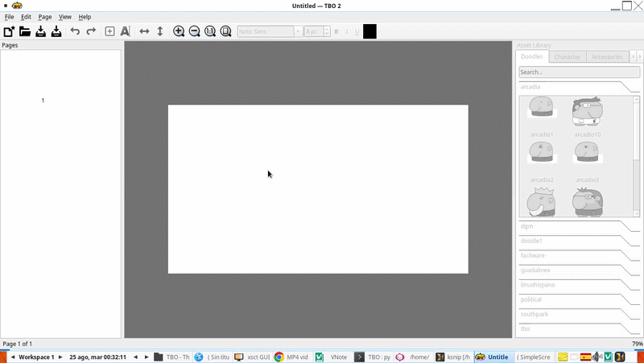

It reads the real format
The .tbo files from 2013 open as they are. TBO 2 writes the same
unversioned v1 format back — chosen for compatibility with the historical
application, not replaced by a new one.
Early alpha · rebuilt with AI coding agents
TBO was a small GPL comic editor written in C and GTK 3, left
unmaintained in 2013. In 2026 it came back as TBO 2 — a
modern Python + PyQt6 rewrite that still reads and writes the
original .tbo documents.
It opens, edits and exports real documents today. It is also unfinished, and it is early enough that a single afternoon of work makes a visible difference.
See it work
Thirty seconds, recorded unedited from the Linux build in the releases — not a mockup and not a design concept. The same build runs on Windows and macOS.

The .tbo files from 2013 open as they are. TBO 2 writes the same
unversioned v1 format back — chosen for compatibility with the historical
application, not replaced by a new one.
Characters, props and bubbles are SVG files in folders. Drop your own under
~/.local/share/tbo/doodle/ in the same layout and they are merged into
the matching categories — no conversion, no plugin API.
Pages go out as PNG, a multi-page PDF and SVG, rendered by the same code that draws the canvas — so a panel stays vector and crisp instead of being flattened at screen resolution.
Call for contributors
TBO 2 is nowhere near feature parity with the original. Pages, panels, text, images, undo/redo and export work; a great deal around them does not yet. The roadmap marks each phase with verifiable exit criteria, and several of them are open.
You do not need to be a Qt expert. The project is developed with AI coding agents, the whole workflow is written down, and each task below is small enough to finish and verify in one sitting.
Visual regression tests with reference images; make the Qt integration tests run headless under Xvfb so they stop being local-only.
Write docs/file-format-v1.md from the observed behaviour of the legacy
reader, and a manual behaviour checklist for TBO 1.0.
Keep identifiers stable between domain objects and their
QGraphicsItem counterparts — a small change with wide effects.
Add .tbo files that exercise Unicode, long paths, external images,
transforms, several pages and missing resources.
Adopt an automatic formatter and a shared EditorConfig so diffs stay
about the change and not about whitespace.
A Flatpak build that works again, and a release job that publishes artifacts instead of letting CI artifacts expire.
The rules are short: keep each change small, add a test or explain how you verified it by hand, treat the document model as the source of truth, and never mix formatting, refactoring and behaviour in one pull request.
What already works
Everything below runs in the alpha. It is not the whole picture, but it is a foundation worth building on.
.tboReads and writes the legacy v1 format with a safe parser, size limits and atomic saves.
Add, delete, reorder and navigate pages and panels. All reversible.
Add, move, clone and delete text with font, size, colour, bold, italic and underline.
Import PNG or JPEG into panels. Missing resources render as dashed placeholders instead of crashing.
Drop doodles, speech bubbles and character parts straight onto a panel.
Every mutation goes through a QUndoStack command, so the history is complete.
A single renderer draws both the canvas and the exported file — what you see is what you get.
Searchable doodles, bubbles and accessories, plus a buildable character from heads, eyes, mouths and ears.
Full-screen reading with keyboard navigation.
Search every text object in the document and jump to the match.
.bak backups and a periodic .autosave — your original is never overwritten silently.
System, dark and light themes, remembered between runs, with high-DPI scaling.
Downloads
Four builds, one per platform. All of them are unsigned and clearly marked as an early version — please treat them that way.
| Platform | File | How to run it |
|---|---|---|
| Windows 10/11 (x64) | TBO-2.0.0.dev0-Windows-x64-portable.zip |
Extract anywhere and run TBO.exe. Portable: no installer, no Python needed. |
| macOS (Intel) | tbo-macos.zip |
Unzip to get TBO.app. It is not signed or notarized, so on first launch use right-click → Open. |
| Linux — any distribution | TBO-2.0.0.dev0-x86_64.AppImage |
chmod +x it, then run it. Needs FUSE; without it, add --appimage-extract-and-run. |
| Debian / Ubuntu | tbo_2.0.0.dev0-1_all.deb |
sudo apt install ./tbo_2.0.0.dev0-1_all.deb. Uses the distribution's python3-pyqt6 rather than bundling Qt. |
Check before you run
A download page that says "trust us" is worth very little. Everything needed to check these files independently is public: the source, the build workflow, the checksums, and a scan report for each artifact.
| Artifact | VirusTotal | Report |
|---|---|---|
| Linux AppImage | 0 / 64 | open |
Linux .deb |
0 / 61 | open |
| macOS | 0 / 73 | open |
| Windows portable | 0 / 66 | open |
All four scored zero detections when built on 2026-10-14. Read that as what it is:
VirusTotal aggregates third-party engines and produces no verdicts of its own, the
scores drift as engines update, and several Windows-only engines cannot process an
AppImage or a .deb at all.
sha256sum <file>.SHA256SUMS in the release.virustotal.com/gui/file/<that hash> to see the report for those exact bytes.How to contribute
TBO was revived with OpenCode + DeepSeek, and the same workflow is open to you. Clone the repository, point your agent at the roadmap, run the tests, open a pull request. The full instructions live in the contribution guide.
git clone --recurse-submodules https://github.com/wachin/TBO.git
cd TBOpython3 -m venv .venv
source .venv/bin/activate # Windows: .venv\Scripts\activate
pip install -e ".[dev]"./tbo.sh data/tut.tbo
pytest tests/unit -qThis is the prompt that started the project. It tells the agent to explore before touching anything, propose a plan, and wait for approval.
You are working on TBO, a comic editor originally written in C and GTK 3
(unmaintained since 2013). The legacy source code lives in the `legacy/`
directory at the repository root.
Your task is to port this program to Python and PyQt6 as TBO 2. Before
modifying anything, do the following in order:
1. EXPLORE — Read the legacy code under `legacy/src/` and the historical
documentation. Do NOT modify or create any files yet. Summarize:
- what the application does (its features and data model);
- the structure of the legacy `.tbo` format;
- the main architectural pieces (model, canvas, tools, save/load, export);
- which behaviors must be preserved for compatibility.
2. PLAN — Propose a ROADMAP.md for the modernization to PyQt6, with phases
and exit criteria, following these principles:
- Reimplement, do not transliterate.
- The document model must be independent of Qt widgets (plain dataclasses).
- Every document change must be an undoable command (QUndoStack).
- Read/write the legacy .tbo v1 format with a safe parser: size limits,
strict validation, contextual errors, and atomic saves.
- The legacy code stays in `legacy/` as a reference oracle.
3. After I approve the plan, start with the first phase: a small, installable,
testable Python skeleton.
Throughout the work:
- Re-check the current state of the repository before modifying files.
- Run the test suite after meaningful changes and keep it green.
- Use clear conventional commit messages, one logical change per commit.
- Ask me when a decision affects compatibility, licensing, or the file format
instead of guessing.The prompt is not a magic trick. What makes it work is the third step: it forces the agent to read the legacy code and agree on a plan before writing a line, which is what keeps a long session from drifting.
Already using OpenCode? There are notes on running it on Linux and Termux with free
DeepSeek access in
AGENTS/.
Where the project is
The roadmap is organised in phases, and each phase ends with exit criteria rather than a date. The next one starts when the previous one is verifiably done.
.tbo compatibilitySafe parser, atomic writer, round-trip tests, fuzzing.This list is deliberately not annotated with progress: a status copied into a web page goes stale within a week. The live checklist, with every exit criterion, is ROADMAP.md (in Spanish).